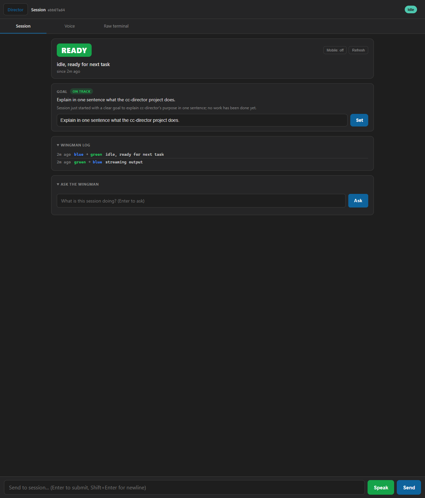
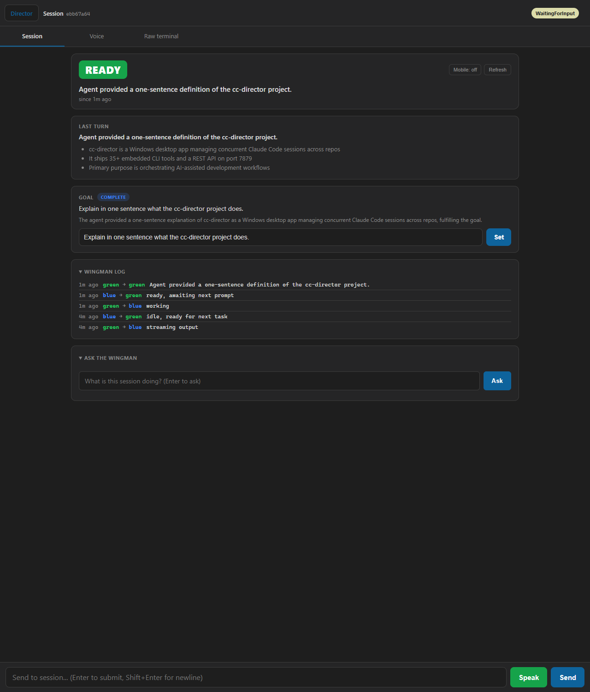
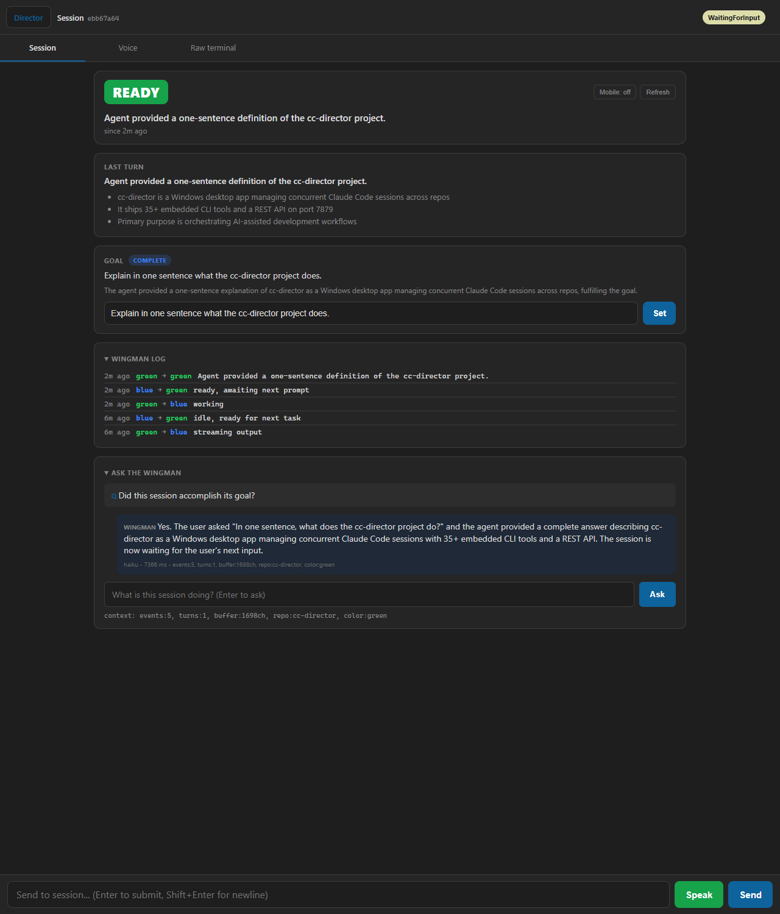

Two related deliverables were verified:
| Area | Check | Result |
|---|---|---|
| Build | Slot-5 publish of renamed code | PASS 0 warnings, 0 errors |
| Build | Core / Contracts / ControlApi / Gateway compile | PASS 0 CS errors, 0 warnings |
| Unit tests | Wingman suite (incl. 12 new goal tests) | PASS 129 / 129 |
| REST | GET /sessions/{id}/wingman | PASS |
| REST | POST /sessions/{id}/wingman/goal | PASS |
| REST | POST /sessions/{id}/wingman/ask | PASS |
| REST | GET /sessions/{id}/wingman/explain | PASS |
| Feature | Goal verdict lifecycle (on_track -> complete) | PASS |
| UI | Goal panel renders + verdict chip | PASS |
| UI | Ask the Wingman works in browser | PASS |
| UI | JS console errors | PASS only a benign favicon 404 |
The "Supervisor" subsystem (a shipped feature, phases 1-8 plus the "Brain" work) was renamed to "Wingman" across 60+ files. Naming is now derivable from the repo; the dated execution logs (GOAL_CC_DIRECTOR_SUPERVISOR.md, PRD_CC_DIRECTOR.md) were deliberately left as historical records.
| Layer | Before | After |
|---|---|---|
| Namespace | CcDirector.Core.Supervisor | CcDirector.Core.Wingman |
| Service | SupervisorService | WingmanService |
| Status owner | SessionStatusSupervisor | SessionStatusWingman |
| Contracts | SupervisorViewDto, SupervisorAskRequest/Result | WingmanViewDto, WingmanAskRequest/Result |
| REST routes | /sessions/{id}/supervisor[/ask|/explain] | /sessions/{id}/wingman[/ask|/explain] |
| Disk log | supervisor-events.jsonl | wingman-events.jsonl |
| UI labels | SUPERVISOR / Ask the supervisor | WINGMAN / Ask the wingman |
| Design docs | docs/architecture/supervisor/ | docs/architecture/wingman/ |
The renamed UI labels are visible in every screenshot below ("WINGMAN LOG", "ASK THE WINGMAN", and the "WINGMAN" answer label).
Goal Management is the first expanded responsibility. It is strictly observational in this slice: the Wingman reports a verdict but never changes the status color or acts on the session.
POST /wingman/goal.AssessGoalNowAsync).TurnSummaryCache re-assesses the goal against the recent turn summaries.GET /wingman and the Session View.unknown with a reason - a verdict is never fabricated.unknown so a stale verdict cannot linger.GET /healthz
{"status":"ok","directors":1,"sessions":0,"version":"0.3.2.0",
"directorId":"550851be-af2a-41c4-ae25-3c337ddaeb0f","machineName":"MACHINE_A"}
GET /sessions/ebb67a64.../wingman
{ "currentColor":"green", "currentReason":"idle, ready for next task",
"goal":null, "goalState":"unknown", "goalReason":"", "goalEvaluatedAt":null }
POST /sessions/ebb67a64.../wingman/goal
body: {"goal":"Explain in one sentence what the cc-director project does."}
{ "goal":"Explain in one sentence what the cc-director project does.",
"goalSetAt":"2026-05-23T21:22:25Z", "goalState":"unknown" } // verdict pending
| Time | Verdict | Reason |
|---|---|---|
| 17:22:30 | on_track | "Session just started with a clear goal to explain cc-director's purpose in one sentence; no work has been done yet." |
| 17:26:08 | complete | "The agent provided a one-sentence explanation of cc-director as a Windows desktop app managing concurrent Claude Code sessions across repos, fulfilling the goal." |
Between the two verdicts, a real prompt ("In one sentence, what does the cc-director project do?") was sent to the session. The agent answered, the turn completed, TurnSummaryCache produced a summary, and the goal was automatically re-assessed - moving the verdict from on_track to complete with no manual trigger.
POST /sessions/ebb67a64.../wingman/ask
body: {"question":"What is the current status color of this session and why?"}
{ "status":"ok", "model":"haiku", "latencyMs":5216,
"answer":"The status color is green (idle, ready for next task). The session is
currently idle - the agent has finished streaming output and is waiting
for your next instruction." }
GET /sessions/ebb67a64.../wingman/explain
{ "mobileMode":false, "text":null } // correct: no cached briefing (mobile mode off)



/wingman/ask route works end-to-end from the UI.PASS dotnet test --filter Wingman gives 129 passed, 0 failed, 0 skipped. 12 of these are the new Goal Management tests:
| Test | What it proves |
|---|---|
AssessGoalAsync_no_goal_returns_unknown | Empty goal yields unknown, not a guess |
AssessGoalAsync_no_claude_path_returns_unknown | No CLI configured yields unknown |
AssessGoalAsync_bad_path_returns_unknown_not_fabricated | Process failure never fabricates a verdict |
ParseGoalAssessmentJson_extracts_valid_state (x3) | on_track / drifting / complete parse correctly |
ParseGoalAssessmentJson_fenced_json_is_tolerated | Markdown-fenced JSON is handled |
ParseGoalAssessmentJson_garbage_returns_unknown | Garbage input is safe |
ParseGoalAssessmentJson_invalid_state_returns_unknown | Unknown state value is rejected |
ParseGoalAssessmentJson_empty_returns_unknown | Empty input is safe |
BuildGoalAssessmentPrompt_includes_goal_and_state_options | Prompt contains the goal + all state options |
BuildGoalAssessmentPrompt_handles_no_summaries | Zero-turn case handled |
WingmanView does not yet show the goal (needs SessionViewModel plumbing).cc-director-gateway is running (file lock); this QA used an isolated slot-5 build to work around that without touching running instances.